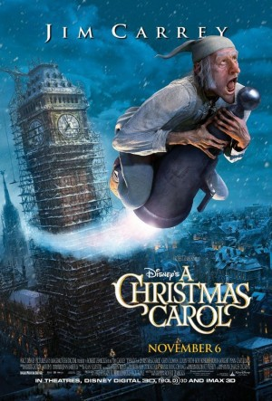

Alternativ: A Christmas Carol
 
 IMDB-Wertung: 6.8 / 10
IMDB-Wertung: 6.8 / 10  Metascore:
Metascore: 
Wie jeden Tag zeigt sich Ebenezer Scrooge auch am Heiligen Abend als Geizhals und Misanthrop, ob er nun seinen getreuen Buchhalter anblafft oder seinen gut gelaunten Neffen. Wenig später begegnet er dem Geist seines verstorbenen Geschäftspartners Joseph Marley, der im Jenseits den Preis für seine Herzlosigkeit bezahlt. Marley, der Scrooge ein ähnliches Schicksal ersparen möchte, erzählt ihm, dass er von drei Geistern Besuch bekommen wird. Und in der Tat: Die Geister der vergangenen, gegenwärtigen und künftigen Weihnacht entführen den alten Scrooge auf eine Reise, die ihm letztendlich die Augen öffnet. Dabei wird er mit Wahrheiten konfrontiert, die er am liebsten verleugnen möchte, doch er muss sein Herz öffnen und seinen jahrelangen Groll ablegen, bevor es zu spät ist.
Jahr: 2009
Dauer: 95 Minuten
FSK: 12
Land: USA Studio: Walt Disney Studios Motion PicturesTonspuren: DTS - ,
Untertitel: Deutsch,
Auflösung: 1080p (1920x816) Größe: 4976 MB
Genre: Drama, Fantasy, Animation/Trick, Familie, Weihnachten
Regisseur:  Robert Zemeckis
Robert Zemeckis
Drehbuch: Kan Shimozawa
Soundtrack:
Darsteller:
Datei: X:\Kinder Disney HD\2000-2018\Weihnachtsgeschichte, Eine (2009, FSK12, 1920x816) 3D.mkv seit 22.12.2016
Festplatte: Kinder-Filme+Trick
 Es gibt insgesamt 45 Filme in der Gruppe 'Kinder Disney HD\2000-2018'
Es gibt insgesamt 45 Filme in der Gruppe 'Kinder Disney HD\2000-2018'